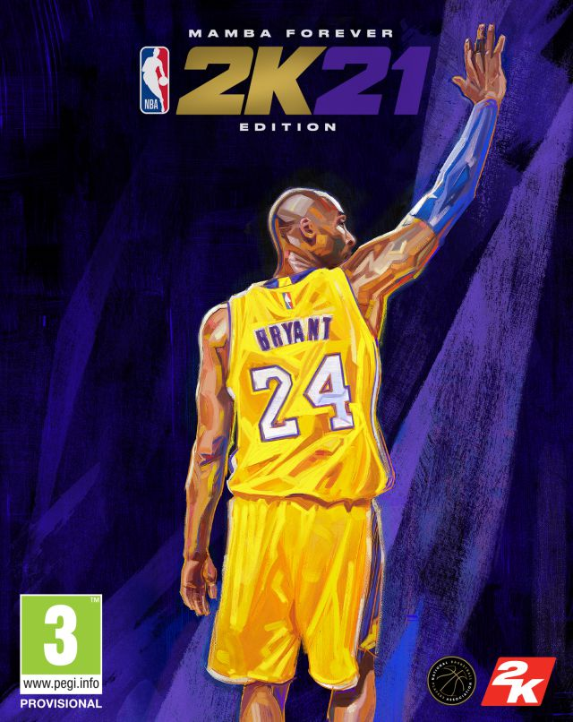

A nadie se le escapa que la temporada 2020 de la NBA ha sido especialmente atípica por la pandemia, así como ha sucedido en muchos otros deportes más o menos afectados por la misma. Los play off finales se jugaron en una burbuja nada menos que en Disneylandia con espectadores virtuales y con unos campeones que reverdecen los laureles de una franquicia, la de los Lakers, que llevaba demasiado tiempo esperando para seguir haciendo historia. Incluso el draft, otro gran espectáculo del deporte USA, acaba de celebrarse de forma remota. Pero a los aficionados que no hemos tenido toda la NBA que hubiéramos deseado nos ha quedado el consuelo de bajar a la pista con nuestros jugadores favoritos en pabellones llenos de ruidosos espectadores virtuales gracias a simuladores como el NBA2K21. Y gracias a las sucesivas evoluciones del juego ahí está todo: gráficas realistas, estrategia, gestión del equipo y la posibilidad de hacer carrera en la NBA con nuestro propio «rookie».
Carlos García Martínez / cgarciam114@iesarroyoharnina.es